1088D24 rigid pipe for coolant inlet to water pump - r + r
- Path
- Procedures > 10 ENGINE > 1088 ENGINE COOLING > 1088D coolant hoses and sleeves > 1088D24 rigid pipe for coolant inlet to water pump - r + r
- Kind
- repair procedure (removal / refitting; the operation number is the code)
- Applies to
- engines: 1.6 TS , 2.0 JTS, 1.9 JTD 8v , 1.9 JTD 16v, 2.0 JTS, 2.4 JTD 20v; all production periods
- Interactive page
- https://sloeber94.github.io/elrnDB-a156/en/#/3237711
Applies to: engines: 1.6 TS ; all production periods
1088D26 rigid intake pipe to water pump - r+r for versions with a/c
Applies to: engines: 2.0 JTS, 2.0 JTS; all production periods
 Removing
Removing
 Refitting
RefittingPosition the vehicle on the ramp.
Proceed with removal 5530B10 battery - r+r .
Drain the air conditioner coolant circuit 5040A10 Air conditioning refrigerant CIRCUIT - Draining and Refilling .
Proceed with removal 4450B04 right front wheel r r .
Proceed with removal 7055B54 under-engine guard - r r .
Proceed with removal 5040A20 air conditioner compressor - r+r - includes fluid level check and top up if necessary .
Proceed with removal 5040A26 compressor mount - r r .
1. Disconnect the lower coolant outlet hose from the radiator and drain the engine coolant.
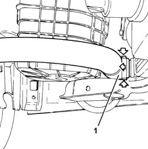
Applies to: engines: 2.0 JTS, 2.0 JTS; all production periods
Proceed with removal 1016A40 ignition coil cover on cylinder head- r+r .
Proceed with removal 1076A48 catalytic converter heat shield - r r .
1. Loosen band and disconnect the upper coolant inlet hose to the radiator thermostat side.
2. Loosen the band and disconnect the coolant outlet pipe from the climate control heater, water pump rigid inlet pipe side.
3. Loosen the band securing the coolant outlet pipe from the engine oil heat exchanger on the water pump rigid inlet pipe side.
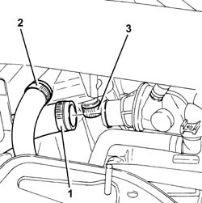
Applies to: engines: 2.0 JTS, 2.0 JTS; all production periods
1. Loosen the band and disconnect the engine coolant supplyj sleeve, water pump rigid inlet pipe side.
2. Undo the bolt securing the guide tube for the engine oil dipstick to the water pump rigid fluid inlet pipe.
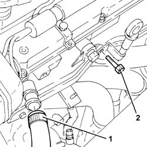
Applies to: engines: 2.0 JTS, 2.0 JTS; all production periods
1. Undo the bolts (1a) and remove the water pump rigid inlet pipe (1b) complete with lower coolant outlet pipe from the radiator (1c) after disconnecting the coolant outlet pipe from the engine oil heat exchanger from the radiator.
2. Remove the O-ring.
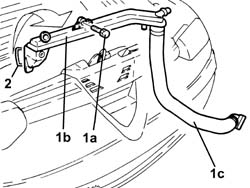
Applies to: engines: 2.0 JTS, 2.0 JTS; all production periods
Refitting
RemovingRefit the water pump rigid inlet pipe, complete with lower coolant outlet sleeve from the radiator and O-ring and secure it using the bolts.
Tighten the bolt securing the engine oil dipstick guide tube to the water pump fluid rigid fluid intake pipe.
Connect the engine coolant supply sleeve, water pump rigid inlet pipe side, to the water pump and tighten the band.
Connect the coolant outlet pipe from the engine oil heat exchanger to the water pump rigid inlet pipe and tighten the band.
Connect the coolant return hose from the climate control heater on the side of the rigid inlet pipe to the water pump and tighten the pump.
Connect the upper coolant inlet hose to the radiator, thermostat side, and tighten the band.
Proceed with refitting 1076A48 catalytic converter heat shield - r r .
Proceed with refitting 1016A40 ignition coil cover on cylinder head- r+r .
Connect the rapid attachment for the bottom coolant outlet hose from the radiator.
Proceed with refitting 5040A26 compressor mount - r r .
Proceed with refitting 5040A20 air conditioner compressor - r+r - includes fluid level check and top up if necessary .
Proceed with refitting 7055B54 under-engine guard - r r .
Proceed with refitting 4450B04 right front wheel r r .
Fill the air conditioner coolant circuit 5040A10 Air conditioning refrigerant CIRCUIT - Draining and Refilling .
Proceed with refitting 5530B10 battery - r+r .
Refill the engine cooling system with coolant 0010T20 coolant change .
Remove the car from the ramps.
Applies to: engines: 1.9 JTD 8v ; all production periods
Removing
Refitting1080C10 e.g.r. valve - r + r .
1088D26 rigid intake pipe to water pump - r+r for versions with a/c .
Applies to: engines: 1.9 JTD 8v ; all production periods
Refitting
Removing1088D26 rigid intake pipe to water pump - r+r for versions with a/c .
Applies to: engines: 1.9 JTD 16v; all production periods
Removing
RefittingPosition the vehicle on the ramp.
Proceed with removal 1016A10 sound-proofing cover - r + r .
Proceed with removal 7055B54 under-engine guard - r r .
1. Loosen the band and disconnect the lower radiator coolant outlet hose from the radiator, water pump rigid inlet pipe end.
2. Loosen the band and disconnect the system supply pipe from the water pump rigid inlet pipe.
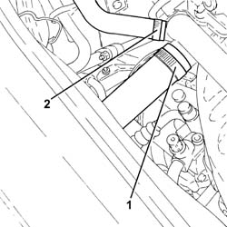
Applies to: engines: 1.9 JTD 16v; all production periods
Proceed with removal 1048A50 air inlet pipe to turbo charger - r + r .
1. Disconnect the hose from the rigid vacuum pipe leading to the turbocharger vane actuator solenoid.
2. Undo the bolts (2a) and move the rigid vacuum pipe leading to the turbocharger vane actuator solenoid (2b) to one side.
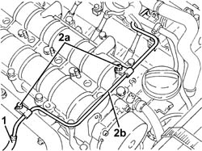
Applies to: engines: 1.9 JTD 16v; all production periods
1. Loosen the band and disconnect the coolant outlet pipe from the water/exhaust gas heat exchanger for the E.G.R. system, water pump rigid coolant inlet pipe side.
2. Loosen the band and disconnect the coolant outlet pipe from the climate control heater, water pump rigid inlet pipe side.
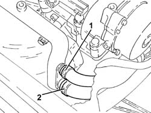
Applies to: engines: 1.9 JTD 16v; all production periods
1. Undo the bolts (1a) and remove the water pump rigid inlet pipe (1b).
2. Remove the gasket.
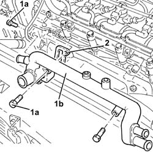
Applies to: engines: 1.9 JTD 16v; all production periods
Refitting
RemovingPlace the water pump rigid inlet pipe, complete with gasket, back in its housing and secure it tightening the bolts to the recommended torque.
Connect the coolant return hose from the climate control heater on the side of the rigid inlet pipe to the water pump and do up the band.
Connect the coolant outlet pipe from the E.G.R. system water/exhaust gas heat exchanger to the water pump rigid inlet pipe and tighten the band.
Connect the vacuum pipe to the brake servo and tighten the band.
Fit the rigid pipe leading to the turbocharger vane actuator solenoid back in its housing and secure with the nuts.
Connect the hose to the rigid vacuum pipe leading to the turbocharger vane actuator solenoid.
Proceed with refitting 1048A50 air inlet pipe to turbo charger - r + r .
Connect the system supply pipe to the water pump rigid inlet pipe and tighten the band.
Connect the lower radiator coolant outlet hose to the water pump rigid inlet pipe and tighten the band.
Proceed with refitting 7055B54 under-engine guard - r r .
Refill the engine cooling system with coolant 0010T20 coolant change .
Proceed with refitting 1016A10 sound-proofing cover - r + r .
Remove the car from the ramps.
Applies to: engines: 2.4 JTD 20v; all production periods
Removing
RefittingPosition the vehicle on the ramp.
Proceed with removal 1016A10 sound-proofing cover - r + r .
Proceed with removal 7055B54 under-engine guard - r r .
1. Loosen the band and disconnect the lower radiator coolant outlet hose from the radiator, water pump rigid inlet pipe end.
2. Loosen the band and disconnect the system supply pipe from the water pump rigid inlet pipe.
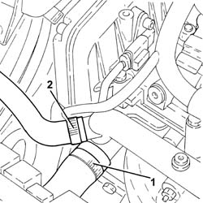
Applies to: engines: 2.4 JTD 20v; all production periods
Proceed with removal 1048A50 air inlet pipe to turbo charger - r + r .
1. Disconnect the hose from the rigid vacuum pipe leading to the turbocharger vane actuator solenoid.
2. Undo the bolts (2a) and move the rigid vacuum pipe leading to the turbocharger vane actuator solenoid (2b) to one side.
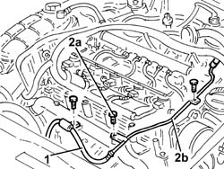
Applies to: engines: 2.4 JTD 20v; all production periods
1. Loosen the band and disconnect the coolant outlet pipe from the water/exhaust gas heat exchanger for the E.G.R. system, water pump rigid coolant inlet pipe side.
2. Loosen the band and disconnect the coolant outlet pipe from the climate control heater, water pump rigid inlet pipe side.
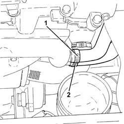
Applies to: engines: 2.4 JTD 20v; all production periods
1. Undo the bolts (1a) and remove the water pump rigid inlet pipe (1b).
2. Remove the gasket.
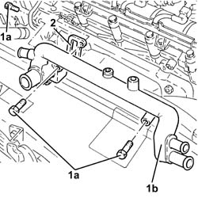
Applies to: engines: 2.4 JTD 20v; all production periods
Refitting
RemovingPlace the water pump rigid inlet pipe, complete with gasket, back in its housing and secure it with the bolts.
Connect the coolant return hose from the climate control heater on the side of the rigid inlet pipe to the water pump and do up the band.
Connect the coolant outlet pipe from the E.G.R. system water/exhaust gas heat exchanger to the water pump rigid inlet pipe and tighten the band.
Connect the vacuum pipe to the brake servo and tighten the band.
Fit the rigid pipe leading to the turbocharger vane actuator solenoid back in its housing and secure with the nuts.
Connect the hose to the rigid vacuum pipe leading to the turbocharger vane actuator solenoid.
Proceed with refitting 1048A50 air inlet pipe to turbo charger - r + r .
Connect the system supply pipe to the water pump rigid inlet pipe and tighten the band.
Connect the lower radiator coolant outlet hose to the water pump rigid inlet pipe and tighten the band.
Refill the engine cooling system with coolant 0010T20 coolant change .
Proceed with refitting 7055B54 under-engine guard - r r .
Proceed with refitting 1016A10 sound-proofing cover - r + r .
Remove the car from the ramps.
Topics linked from this page (13)
- 0010T20 coolant change
- 1016A10 sound-proofing cover - r + r
- 1016A40 ignition coil cover on cylinder head- r+r
- 1048A50 air inlet pipe to turbo charger - r + r
- 1076A48 catalytic converter heat shield - r r
- 1080C10 e.g.r. valve - r + r
- 1088D26 rigid intake pipe to water pump - r+r for versions with a/c
- 4450B04 right front wheel r r
- 5040A10 Air conditioning refrigerant CIRCUIT - Draining and Refilling
- 5040A20 air conditioner compressor - r+r - includes fluid level check and top up if necessary
- 5040A26 compressor mount - r r
- 5530B10 battery - r+r
- 7055B54 under-engine guard - r r
Topics that link to this page (8)
- 1064A24 variable geometry turbocharger exhaust manifold assembly sleeveleading to exhaust pipe r r
- 1072C44 exhaust manifold heat shield on bulkhead - r+r
- 1084B40 engine oil delivery pipe to turbocharger - r + r
- 1088C12 water pump - r+r for versions with air conditioner
- 1810A20 clutch - r + r
- 1820A24 thrust bearing linkage - r + r
- 2110A10 manual gearbox and differential - r + r
- 2110C22 gear input shaft seals - r r